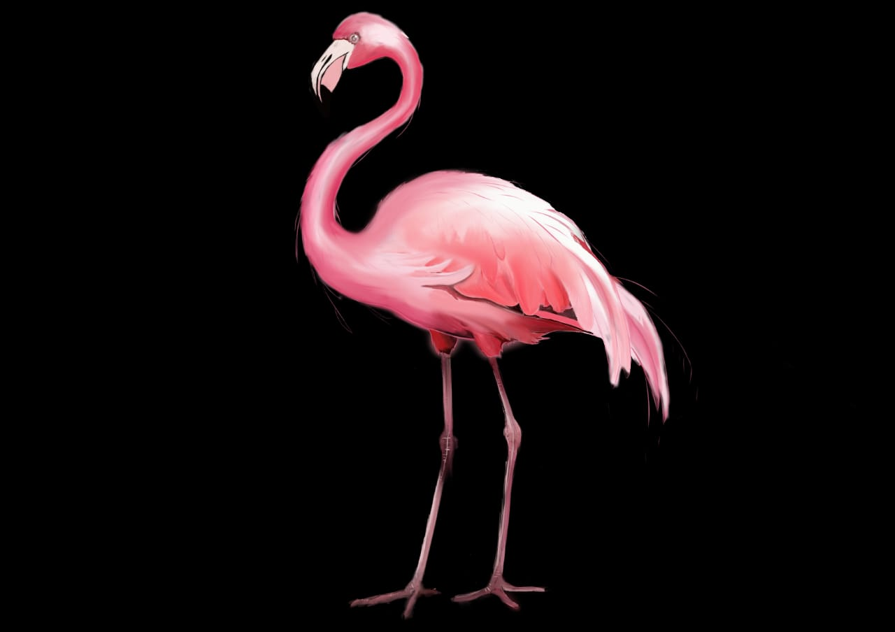
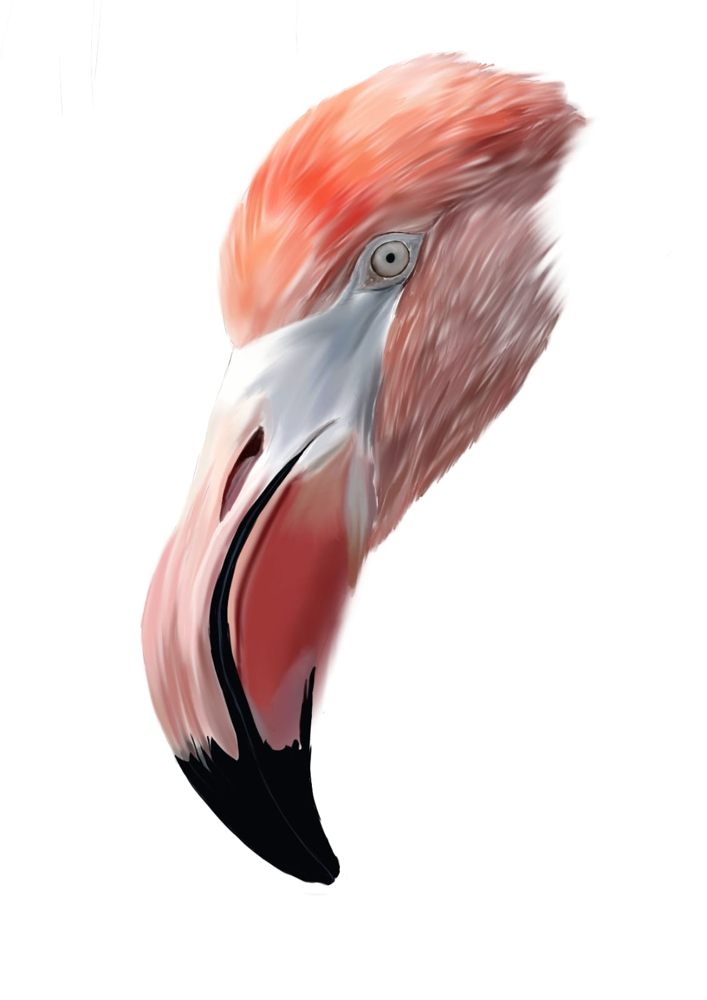

Descripción del Proyecto
Espacio dedicado a la creación artística digital, enfocado en el diseño de personajes, ilustraciones conceptuales y arte lineal. En este proyecto se trabajó exhaustivamente en la limpieza de trazos, la estilización de siluetas y el desarrollo de composiciones visuales equilibradas.

Diseño de Personajes & Color
Desarrollo integral de personajes aplicando capas complejas de iluminación, sombreado digital y texturas detalladas. El enfoque se centró en la armonía cromática y el dinamismo en la pose del elemento central.

Abstracción y Siluetas Limpias
Proceso técnico enfocado en la simplificación visual extrema. Extracción sistemática de líneas esenciales para generar siluetas puras y contornos minimalistas de alta definición sobre fondos limpios, ideales para ilustración gráfica, bocetos técnicos o desarrollo de stickers.